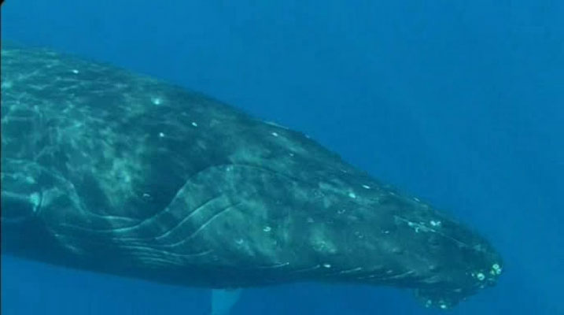
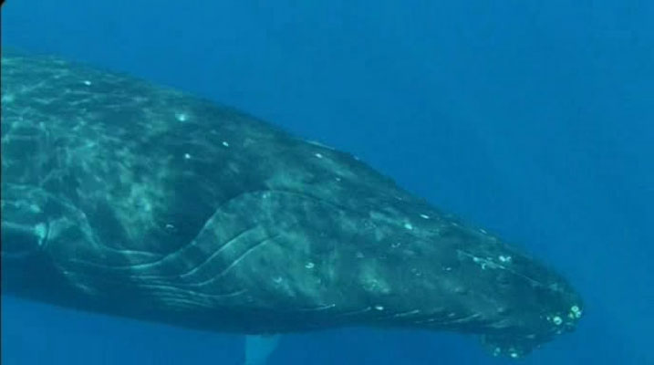
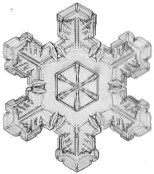
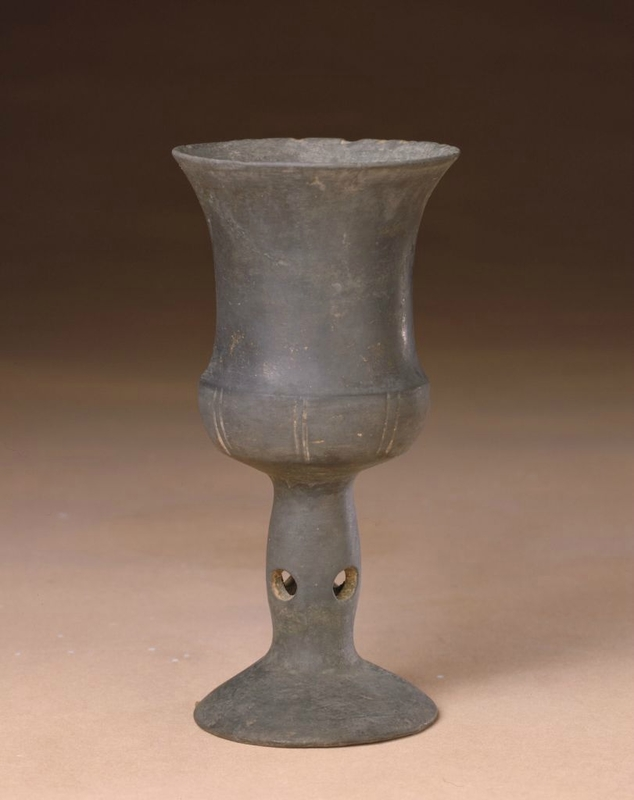
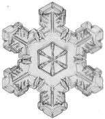
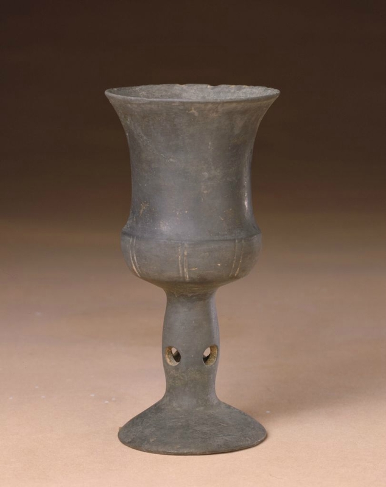

Convulsive beauty will be veiled-erotic, fixed-explosive, magic-circumstantial, or it will not be.
——André Breton
The Nadja I borrowed from the library is such a beauty. It was published by Éditions Gallimard in 1963. The lavender hardcover of it is a little bit faded, with a silver ribbon bookmark in it, just as elegant as Nadja. The book suddenly becomes an entrance, and I couldn't help traveling back to when André Breton was working on it - what else was he thinking?
In the spring of 1919, Breton and Philippe Soupault lived in the Hôtel des Grands Hommes seated at the corner of the Place du Panthéon. The two co-authored the book Les Champs magnétiques(The Magnetic Fields, 1921), and jointly developing the “automatic writing”, thus developing the Surrealism movement.
Just like the youths in Jean-Luc Godard’s films, they like hanging out on the streets or staying in the cafe for half a day. The same went for Breton. It was on “one of those idle, gloomy afternoons he knows so well how to spend, he happened to be in the Rue Lafayette”, and then he came across Nadja. Precisely because of that mental and living state of boredom, the moment of encounter became even more sudden, completely unexpected and surprising. It is “at the mercy of chance — the merest as well as the greatest”. It is like one suddenly was hit by a poem, or entered in a stunned world by a flash of lightning. When Vronsky met Anna for the first time, he saw the excess vitality that she tried to hide, from her gleaming eyes. Such a moment is a spectrally apparition, which Breton called, a “slop-facts(cliff-facts)”.
However, this encounter was to find a mirror reflecting oneself, instead of simply love at first sight. The book is obviously not a romance novel, more like a (medical) observation diary. It reminds me of the creatures I raised when I was child, snails in a soap box, ants in the “Farm Castle”, and silkworms constructing themselves into cocoons. I watched them carefully every day and keep taking notes in order to understand the mysteries of nature. The act of "observation" itself can be seen as a response to the desire for “reality”.
From “My point of departure will be the Hôtel des Grands Hommes…”, to “Once again, now, I see Robert Desnos…”, to “Also a woman’s glove…”, and then many manuscripts drawn by Nadja. These photographic illustrations are not affiliated to the text, but a substitution for depiction, which seems to say at any time: those are all real events! However, the strange thing is Nadja only appeared vaguely once in the book — a montage photo processed by Breton himself with such a specific description:“her fern-colored eyes”(This photo was supplemented by Breton in a later revised edition. The English version I lent from the library is missing this “important” one). Nadja herself is floating in the real world, like a wandering specter. It makes readers naturally wonder: does Nadja really exist? Right here, the different level of reality may be marched by different suspension of disbelief, as Italo Calvino said. Nadja is a "slight shaking" based on the solid reality.
The book is undoubtedly anti-literary. Breton firmly believes that absolute reality is another dream world beyond existence, in order to fight against fiction and depiction, and also to break with the conservative literary concept. But this doesn’t affect the fact that I had glimpsed the similarities to Nadja from the realistic literature. In The Metamorphosis, Kafka ruthlessly turned Gregor into a beetle, until he died and was forgotten by everyone—a wonderful metaphor to show how the cruelty of society. While Dostoevsky is very good at portraying the complex mental state of characters to reflect human’s obscure nature, with Nietzsche calling it resentiment. Besides, there is another example by Virginia Woolf in To the Lighthouse. When Mrs. Ramsay says goodnight to her children, and carefully closes the bedroom door, and let "the tongue of the door slowly lengthen in the lock.” Just using one word “lengthen”, you can picture how slowly she turning the handle of door so as not to waken children. These "apparitions" in realism literature construct a certain truth to my satisfaction, by utilizing various techniques in language and rhetoric, which is also “fu-bi-xing”(赋比兴) in ancient Chinese poetry.
In addition to water, fire, air, and earth, Aristotle named the fifth element that constitutes the world ether. It is the composition of the stream of consciousness, the space above the sky. The “ethereality” comes from the "ether", which is a unity of limited time and space, juxtaposing fiction with non-fiction. It recognizes reality and is rooted in it, while its appearance looks light but actually has weight.
Now, let the imagination flow wildly!
It is a specter.
It is a layer of voile floating slightly and shrouding beyond the ground.
It is cumulative pixie dust behind the flying fairy.
It is Keats‘ astonishment while reading the works of Homer translated by George Chapman for the first time..
It is what Borges said, “Poetry is born at the moment of reading it”.
It is when Tereza was holding a copy of Anna Karenina whiling knocking on Tomáš’ door.
It is the moment when Barthes said the “PUNCTUM” pricks him.
It is the period when Aura came into play as “its unique presence in time and space”.
It is during a math class in middle school I encountered The Waste Land from a cheesy Chinese novel instead of from T.S.Eliot’s poetry.
It is the coincidence happening after I watched Toute la mémoire du monde (1957), he told me a story behind it.
It is a series of experiences composed of accidents.
It is the unexpected, accidental, slop-facts.
It is Nadja.
In fact, compared with Breton's other "automatic writings", such as Poisson soluble (Soluble Fish, 1924) with all the wild illusions and images, Nadja is not a typical case. This is the most special and fascinating thing—that little looming, dissociated and vague point based on the focused observation of reality.
When Breton asked Nadja: Who are you? He got “a reply worthy of it”: “I am the soul in limbo” — a specter. She answered “without a moment’s hesitation”. The difference between ghost and specter is that, even though it is flimsy, it does have a corporal body.
The most enjoyable thing for me recently is listening to the soundtrack of Blade Runner (1982) while falling asleep. Between wake and dream, I thought I myself also was one of the replicants, as if falling into their dreams. When I heard One More Kiss Dear from radio, I couldn't help but wonder whether the memory I had was true.
In Theogony, the muse Mnemosyne can evokes memories of the past with the skill of singing—for the past is not a real, but a skill used to portray the things in the moment. The movement of recalling makes a serious person amiable, makes the wicked show warmth. It is also connects to an experience: the inability to be present. In his conversation with Bernard Stiegler, Derrida said without hesitation: “The desire to touch, the tactile effect or affect, is violently summoned by its very frustration, summoned to come back, like a ghost, in the places haunted by its absence.” In that case, memory is not actually about the past, but an experience about present, through flashbacks.
I felt a shock of absolute reality after watching L'année dernière à Marienbad. “We won’t change the past”, but the man in the film tries to tamper with the woman’s past again and again. If any space-time under feet can be seen as present, one can also flash back/forth to any other space-time through a certain method, causing chaos in time and space. This overlapping and interlaced way of storytelling revealing different space-time in the film is similar to Godard's Jump Cut. Instead of serving for a complete narrative, they even choose to destroy a complete story. That is an “entanglement” that hanter (haunt while obsess) me for a long time.
The entanglement of flashbacks is absolutely multiple, non-linear, discontinuous. It is not a montage. Within the segmented timeline, it refused to be smooth, but jumping back and forth, over and over again.
I repeatedly watch(mostly listen to) the mandarin version of Detective Conan, an animation of childhood, from the 1st episode to the 1000th. Undoubtedly, 1000 episodes are a huge number. So how to keep the audience fresh, the director really put a lot of effort into the narrative. Sometimes the first perspective shifts from the protagonist to the main supporting role; in many cases, the protagonist Conan repeatedly flashes back to the first episode of the black organization making his body small in order to remind the viewer of the plot; and several times using fragments to strings the cases. Change and connection are entangled in the story at the same time. It also keep reminding me how In Search of Lost Time told the memoirs like a complex symphony, how Tolstoy used two lines of Anna and Levin in Anna Karenina at the same time.
Nevertheless, the entanglement is not only the interweaving of several lines, but also jumping out of the medium and switching with other language. Michael Snow once described, “My paintings are made by filmmakers, my sculptures are made by musicians, and my films are made by painters. My music is made by filmmakers. The paintings are made by sculptors, my sculptures are made by filmmakers, my movies are made by musicians, and my music is made by sculptors...sometimes they cooperate to complete works.” The switching of identity naturally connects to the switching of the space. Different methods are intertwined each other in three dimensions’ world.
Let us return to the interspersed photography and text in Nadja again. The images in the book are not only part of the whole, but also can be taken out as an independent thread. The similar situation appears in another Breton’s book L'Amour fou (Mad Love, 1937), inserting photographs by artists such as Man Ray. On one of the pages, he talked about the experience of playing card fortune telling, and his doubt about “myself and her, love, danger, death, mystery”. Then right beside, there is an image — a mandrake root statuette, cards, a hand. Readers may have questions about the order in which images and words were born, and the logic as well as the connection between their existence. The illusion behind those double metaphors constantly challenges the richness of symbolism and levels of imagination. As he firmly made a conclusion in the book that the greatest kind of beauty “would not come to us along ordinary logical paths,” but will come about “convulsively.”
Whitechapel Gallery’s first exhibition in 2019 brought contemporary artworks that once appeared in Vila-Matas’s novels into the real gallery space. It makes the boundary between the world constructed by word and the world of reality even more ambitious. The narrative bouncing back and forth is like a magic. I imagined that I would travel there, and be enlarged from the world of books to the scale of real life. How would I flash back to the novel to find clues, to second-guess the intention of author, or even to another parallel world. The same experience also appeared in reading Georges Perec’s La Vie mode d'emploi (Life, a user's manual, 1978). The novel splits an apartment in Paris and divides the whole building into a chess board with 10 grids horizontally and vertically. He describes the various situations in each room of the apartment according to the Horse Move. When I was reading the book, I also drew a grid along side. The process transferred the text to the drawing from blank paper, and then a three-dimensional space vividly arising in my brain. Isn't this constructing exactly what Calvino felt about Saul Steinberg's pencil drawings? Is the actual leader Sternberg, his hand, or the pen in hand? There is a universe full of colors and lines. It has been exploring, testing and redefining a complete system in secret.
Vila-Matas saw the “the strange, complex structure of the novels of the future” from Seattle library, “because that amazing building was based on vague, disconnected, inconclusive shapes, lacking all harmony and visual logic.” I would prefer to say that the obscure logic is determined by the author. It is a Levitation in the magic trick.
I consider those irregular narrations as the representatives of “truth”. They developed from the continuously convulsive memory. The flashback/forth — entanglement — switching: they might be transient, or long-term; they can be chaotic, rampant, or beating fast. They are using a broken way of existence for pointing to eternity. Just like the countless fragments in the Synecdoche, New York (2018) to cause chaos in timeline, it achieves such a meaningful duration. On the huge stage of time, I believe there has always been a complex dance continuing. It is going through a disordered and indefinite process, simulating any suprematism composition by Malevich, in order to unremittingly strive the truth and the silent eternity.
These fragments I have shored against my ruins.
——T. S. Eliot
If the images can be seen as still fragments, as flat objects, then put them in a row and they can move. This movement here is not the horse motion which Eadweard Muybridge captured, but movement when a book is being quickly flipped through.
This photo was taken in 1953, when André Malraux is choosing pictures for his forthcoming book Le Musée imaginaire de la sculpture mondiale in his apartment in Paris. Accompanying this book, Malraux invented the term Musée imaginaire (imaginary museum) — a museum without walls. From the origin of art as a religious function to the emergence of physical art museums, later to the development of photography book production. Since then, two physically distant works can be juxtaposed in the same page. Because of that, viewers can finally compare different works through images at the same time, for expanding the method of studying art. The imaginary museum is a development of the Mnemosyne Atlas by Aby Warburg and also the predecessor of the current Internet virtual galleries. The archive book is a collection room. In this way, we can restore, compare and generate, a phenomenon or a piece of time in history, so as to reproduce, to invent a hidden story.
Are.na is very popular nowadays. Designers and artists use their “good taste” to create a bunch of found image curating. Each channel there is like a box of collection and can be regarded as a kind of ”archive”. The Instagram account gains a large number of fans by sharing a featured album almost every day. I enjoyed it at the beginning. But later, I can’t help thinking about those unexplored pictures and quotes out of context are like addictive fragments in rapid production, just becoming a convenience for people to get resource. I think the original intention of its creation should be to establish a sharing platform to benefit users to better organize their own research. However, how to make the best use of it? Can the overwhelming “beautiful pictures” and “beautiful words” stand the final test of time?
Before are.na and Tumblr, blogs were a dominant storage container on the internet. My journey of treasure hunting started with literature, film and art reviews in the personal blog. The articles are usually published in a time series, from which you can see the path of a person’s writing and research for years. System took shapes by those long personal history of thoughts, also became the quintessence under the precipitation of time. Those who coded blogs in the early years were usually as pioneers in the education area. They regarded the blog as a small world for academic communication and interaction happening for research (which is different from portfolio website). One interesting thing, in addition to professional related papers, there are sometimes personal life sections: Computer Science professor Martin’s blog collects his favorite poems; S. Yanagi who teaches natural science in a Japanese high school, has a blog sharing her studies on snowflakes; Professor Grofman showed people his collection of folk art, chess and his favorite foods in the hyperlink "What I Do to Relax”.
What is the history of an individual? After the physical death, it should only remain some pieces of thoughts or experiences, which makes one unique from others. I always remembered how I got ecstatic after watching an aeronautical engineer building the airship and flying over forest canopies of Guyana, or the crazy man wanting to build an opera house in tropical rainforest. Their strong will to fight against nature or fate is the heaviness. Compared with that, the Internet is as light as a feather at first glance. However, the blog which carry one’s thinking process and spirit can be seen as the weight in this lightness. A winter snowflake is such an insignificant thing. Nevertheless, there have never been two identical snowflakes in the world.
In ancient Greece, the meaning of the word “philosopher” is “people who love wisdom” instead of “people who have wisdom”, which is very charming — only love can reach the light of wisdom. Whether professional or amateur, love is the reason that supports the survive of a blog. Everything is fragment now. Short messages and information are hard to form a system but becomes dominant in the social media, making the unique characteristics of “snowflakes” more and more blurred. The definition of fragments, the use of fragments and the chose of fragments are always worth thinking about.
Every time I saw crafted pottery from the New Stone Age of China, I have both respect and admiration for them. The encounter between soil and fire in nature produced a wonderful result. Under the moulding by human hands, a coexistence of simplicity and beauty was born. The patterns of each piece reflect the understanding and reaction from people towards nature and environment at that time. “Handmade” was originally related to “survival”. Beginning with primitive society, people made utensils and knives firstly because of functionality but later developing a unique sense of aesthetic.
Under the extreme conditions, handmade can save lives due to the shortage of materials. There are two jailbreak films both coincidentally captured how human-beings used limited materials to create a way for their escaping. In Un condamné à mort s'est échappé (A Man Escaped, 1956) Francis used the method of braiding which he learnt from his sisters to make strong ropes possible; while in Le Trou (The Hole, 1960), there were many scenes of prisoners working together to make various object. I was amazed by one of them could make parts of an iron door into a key for unlocking. They have to do it by themselves, otherwise they will die.
One day I was surfing the internet, a young man called S3333333, who makes short video caught my eyes. He uploaded videos of using discarded products to do cosplay with his friends, for restoring classical scenes in animation. He really well used all kinds of tools in the countryside. For people who are not living a rich life like him, the props made out of paperboards and waste plastic by hands are no longer functional. But they do remind me of what Friedrich Schiller once said about how art begins with “play”. Because human beings reach their fullest potential when “playing” with beauty. The guy and his friends are not considered as professional artists, but they are indeed creative and what they have made are “pure art” to me. Inmagine there is actually a world in Junkopia (1981), where not far from the highway, sculptures made of various garbage pieces are left behind by the sea. They ignore the rules of the modern culture and only maintain their innocence and purity in the scrap iron and bronze.
I care about the objects which are not “exquisite”. They are made by bare hands, with scissors, tapes or other tools together, only to play different games. The appearance of all the irregular, jagging and random chaos are beautiful accidents to me. Turning waste into something value brings inspiration to life. My roommate didn’t know Enzo Mari, but her hand-made vessel for taking care of plants is similar to Mari’s vase for flowers from used packaging. When I say “let’s make it by hand”, I am talking about a manifesto. Under nowadays capitalism, since mass production has become the mainstream and monopoly, the humble quality in the handmade stuff are more precious and rare. The things made by human hands are unique. As Sybil Moholy-Nagy described folk buildings constructed by ordinary beings in Native Genius in Anonymous Architecture, “Its buildings tell not the official but the private history of a culture — the unending struggle for physical and spiritual survival of anonymous men. Indigenous buildings speak the vernacular of the people.”
I hope my practice is also an anonymous building, constructed by one person (and friends), with human labor and efforts. I hope its body made of real material from nature, such as bamboo, rocks, straw bales and wood...They are unadorned but have very strong qualities. I hope the building won’t be restricted by any style, which is “unclassified”. I hope it accepts the scrubbing of time, wind and sun, also accepts the moss and grass growing in the cracks.
When the train slowly traveling into the countryside from a certain city in China, I enjoyed the buildings standing in mountains through the window. I hope my practice is one of them. I will work slowly, plant seeds, build a garden and a pond. When spring comes, I will wait for swallows to fly over, and build nests under my eave.
Little Birds Don’t Know They Live in a Technological Age
prints
R.v.J.G
The Window
Heart’s Knot(心结)
The Gleaners and I
As I was Walking Occasionally, I Saw the Sudden Gleam in the Gloom
installation
wodinW ehT
poster for O+M lecture
drawing
The Door to the Hidden
Train of Thought(思绪)
Nightmare
website
simplelivin.faith
(with Aidan Quinlan)
Observation Diary
(on-going)
★ & ☄
(on-going)
collective writings
(*)
Journey to the Lost
The Experience of Aura
Love Online
a critique writing
 

 


